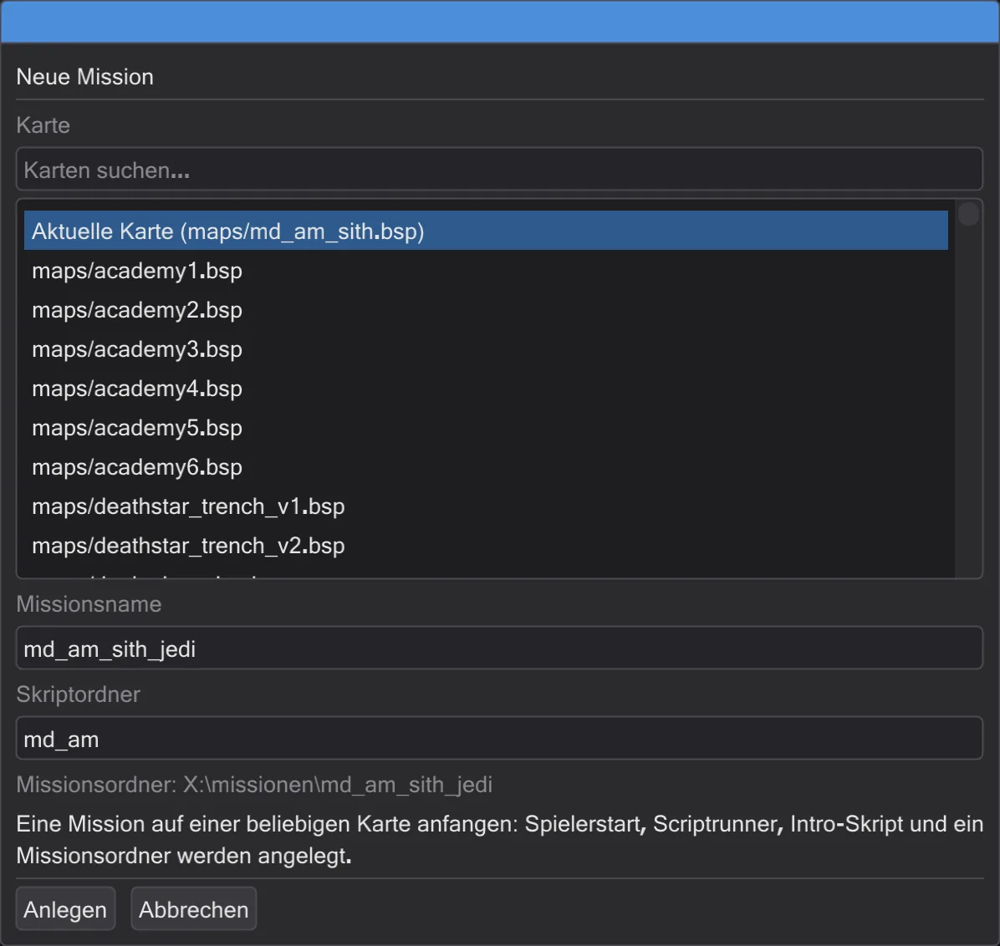
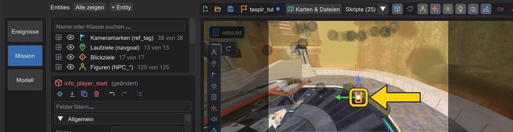
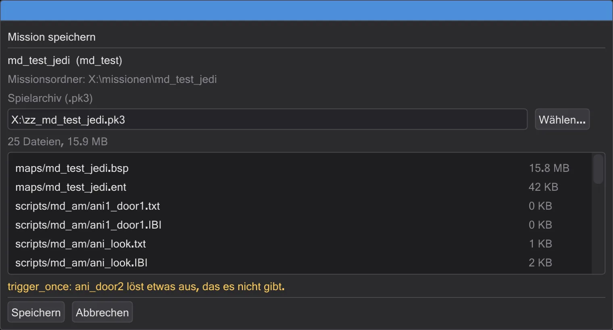
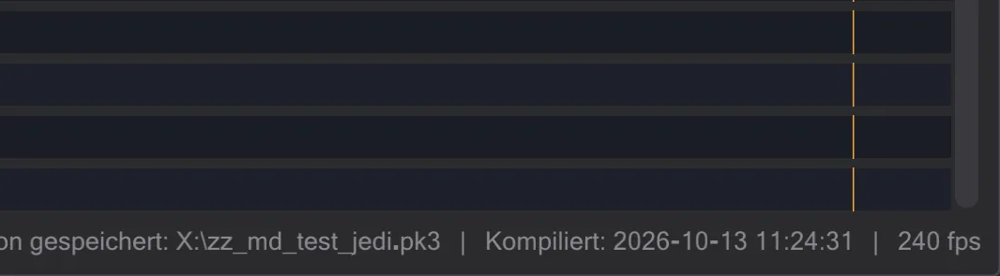

Eine eigene Mission
Von einer leeren Karte zu einer Mission, die das Spiel lädt: anlegen, ein Intro dazu, prüfen und in ein .pk3 packen.
Schritte#
- 1
Die Mission anlegen. Im Tab Mission Neue Mission drücken (oder die Karte auf der Startfläche). Eine Karte wählen, einen Namen wie
md_test_jedieintippen und Anlegen drücken.
Der Dialog für die neue Mission. - 2
Ansehen, was entstanden ist. Ein Spielerstart, ein Skriptstarter und das Intro-Skript sind gesetzt; das Intro ist in einem Reiter offen. Der Missionsname steht in der Kartenleiste.

Die frische Mission. - 3
Das Intro schreiben. Eine Kameraeinstellung (Eine erste Zwischensequenz) und eine laufende Figur (Eine Figur läuft) hinzufügen. Alles landet im Intro-Skript.
- 4
Mission speichern öffnen. Mission speichern drücken. Der Dialog nennt jede Datei, die ins Archiv kommt, und prüft die Mission.

Die Prüfungen vor dem Speichern. - 5
Rotes beheben, dann speichern. Fehler müssen weg (etwa ein Skript, das eine Entity benutzt, das es aber nicht gibt); Warnungen dürfen bleiben. Speichern schreibt
zz_md_test_jedi.pk3in den Spielordner.
Gespeichert - die Meldung zeigt, wohin. - 6
Spielen. Starte das Spiel, öffne die Konsole und tippe
devmap md_test_jedi. Beim nächsten Mal öffnet Datei → Zuletzt geöffnete Missionen das ganze Projekt wieder.
Die Mission in der Liste der letzten.